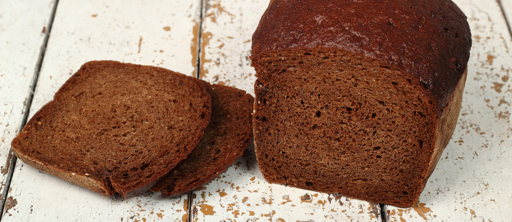

Duona | Duonos, pyrago gaminiai | Keksiukai | MAXIMA
2020.10.29 09:33

Apie mus
Akcijos
Vykstančios akcijos Teminės akcijos Leidiniai
Asortimentas
Meistro kokybė Sūrių klubas Žuvų turgus Egzotiniai vaisiai ir daržovės Užsakomieji gaminiai Receptai
Mano AČIŪ
Prisijungti Apjungti korteles Registruotis Paslaugos Pagalba Mums rūpi Išvien dėl Lietuvos Sezonai
Programėlė
Barbora
Nemokama infolinija (8-22 val.)
8 800 20050
Kas esame
Apie mus Apdovanojimai Organizacinė struktūra Pranešimai žiniasklaidai Kontaktai ir rekvizitai
Karjera
Darbo pasiūlymai Meistrų mokykla
Mums rūpi
Naujienos Lietuvos Maximalistai Kitos iniciatyvos ir partneriai Išvien su gamta Socialinės atsakomybės ataskaitos Mūsų remiamos organizacijos Mes - bendruomenė Kuo vadovaujamės
Parduotuvės
Parduotuvių adresai ir darbo laikas Saugumas
Verslui
Kortelės juridiniams asmenims Prekybos plotų nuoma Tiekėjams Prekių ir paslaugų pirkimai Sąskaitos faktūros
Išvien dėl Lietuvos
Apie projektą Apie mus
Akcijos
Akcijos
Vykstančios akcijos Teminės akcijos Leidiniai
Asortimentas
Asortimentas
Meistro kokybė Sūrių klubas Žuvų turgus Egzotiniai vaisiai ir daržovės Užsakomieji gaminiai Receptai Sezonai
Kas esame
Kas esame
Apie mus Apdovanojimai Organizacinė struktūra Pranešimai žiniasklaidai Kontaktai ir rekvizitai
Karjera
Karjera
Darbo pasiūlymai Meistrų mokykla
Mums rūpi
Mums rūpi
Naujienos Lietuvos Maximalistai Kitos iniciatyvos ir partneriai Išvien su gamta Socialinės atsakomybės ataskaitos Mūsų remiamos organizacijos Mes - bendruomenė Kuo vadovaujamės
Parduotuvės
Parduotuvės
Parduotuvių adresai ir darbo laikas Saugumas
Verslui
Verslui
Kortelės juridiniams asmenims Prekybos plotų nuoma Tiekėjams Prekių ir paslaugų pirkimai Sąskaitos faktūros
Išvien dėl Lietuvos
Išvien dėl Lietuvos
Apie projektą Paslaugos Pagalba Mums rūpi Išvien dėl Lietuvos
Programėlė
Barbora
Nemokama infolinija (8-22 val.)
8 800 20050
Mano AČIŪ
Prisijungti Apjungti korteles Registruotis Duonos gaminiai Tegyvuoja lietuviški receptai! Grįžti į sąrašą
Kepame duoną ir bandeles
Viliojantis kepinių kvapas kviečia užsukti į duonos ir konditerijos skyrius. Čia visada rasite vietoje kepamos duonos, nesaldžių ir saldžių bandelių. Nesunkiai rasite dar karštų gardėsių – bandeles kepame net 3 kartus per dieną. O vakare, likus 2 valandoms iki parduotuvės uždarymo, jų galite įsigyti su 30 proc. nuolaida
Kepame duoną ir bandeles šiose MAXIMA parduotuvėse:
Visi miestai Vilnius Kaunas Klaipėda Šiauliai Panevėžys Alytus Anykščiai Ariogala Aukštadvaris Biržai Daugai Druskininkai Elektrėnai Gargždai Garliava Ignalina Jonava Joniškis Jurbarkas Kaišiadorys Kalvarija Kazlų Rūda Kėdainiai Kelmė Kretinga Kupiškis Kuršėnai Kybartai Lazdijai Lentvaris Maišiagala Marijampolė Mažeikiai Molėtai Naujoji Akmenė Nemenčinė Nida Pabradė Pakruojis Palanga Pasvalys Plungė Prienai Radviliškis Raseiniai Rietavas Rokiškis Rumšiškės Šakiai Šalčininkai Šilalė Šilutė Širvintos Skaudvilė Skuodas Švenčionėliai Švenčionys Tauragė Telšiai Trakai Trakų Vokė Tytuvėnai Ukmergė Utena Varėna Vievis Vilkaviškis Visaginas Zarasai
Duonos gaminiai
Akcijos Vykstančios akcijos Teminės akcijos Leidiniai Leidiniai Asortimentas Meistro kokybė Sūrių klubas Žuvų turgus Egzotiniai vaisiai ir daržovės Užsakomieji gaminiai Receptai Kas esame Apie mus Apdovanojimai Organizacinė struktūra Pranešimai žiniasklaidai Kontaktai ir rekvizitai Karjera Darbo pasiūlymai Meistrų mokykla Parduotuvės Parduotuvių adresai ir darbo laikas Saugumas Mums rūpi Naujienos Lietuvos Maximalistai Kitos iniciatyvos ir partneriai Išvien su gamta Socialinės atsakomybės ataskaitos Kuo vadovaujamės Mūsų remiamos organizacijos Mes - bendruomenė Išvien dėl Lietuvos Apie projektą Verslui Kortelės juridiniams asmenims Prekybos plotų nuoma Tiekėjams Prekių ir paslaugų pirkimai Sąskaitos faktūros
Joniškio duona - šeimos duonkepių tradicijos. Joniškis Minkšta naminė duona be raugo, mielių, kepimo miltelių ar sodos Ruginė duona be minkymo Greita pasukų duona su sėklomis Skanučiai ruginiai duoniukai be mielių Salyklinė juoda duona be mielių Naminis raugas duonai - su kefyru, tad išrūgsta daug greičiau! ...
Lietuviškos duonos kepimo tradicijos - Klaipėdos duona Juoda duona – lietuvio pagrindinis maistas nuo seno 🙂 Nors retai ją valgau, kartais užeina noras pasigamint pačiai. Pamenu kad gyvendama Lietuvoje visad pirkdavau grūdėtą ”Rugelio” duoną iš turgaus – kokia skani būdavo! Atėjus sveikos gyvensenos madai ir poreikiui duonos atsisakiau, bet numetus itin daug svorio nusprendžiau grįžt prie duonos […]
DUONA - Maistotaksi.lt RIEŠUTŲ DUONA Apysakos ir apsakymai Riešutų duona [...] Kaminskas sėdi kabinoje, o Peliūkštis viršuj, tarp spintų, veidrodžių ir puodų įsitaisęs ant sofos su dviem elektros lemputėm rankose. Tėvas praveria kambario duris ir susijaudinęs sako: – Ten ji, Kaminskaitė, tavęs laukia. – Žinau... – sumurmu.
Duonos kepykla | lasuduona.lt tamsi duona su grŪdais (ketvirtis kepalo) €2.25. ruginĖ viso grŪdo becukrĖ ir bemielĖ duona (ketvirtis kepalo) nuo €2.30. daugiau. provanso duona (Šaldyta) (vnt.) €1.50. provanso duona. €1.50. naminĖ duona be mieliŲ (ketvirtis kepalo) €1.90. kanapinĖ duona (ketvirtis kepalo) ...
DUONA - E-gulbelė Ir stebuklas pavirto duona. Buvo namai. Stovėjo stalas. Paskutiniai atėjo Knyga ir kryžius Į krikštasuolės kertę. Jeigu esi Dievo sūnus, Dabar viską atpirk. LIETUVIŠKASIS EMAUS Skaudžiai pamuštos jau kojos, Ir kelionėje praalkai, Vakarop saulelė gula – Pasilik pas mus.
Saulius Šaltenis. Riešutų duona.LHM200 Vieną didžiausių šalies kepyklų „Biržų duona“ susitelkti į tvarios veiklos kūrimą paskatino įmonės vertybės ir noras kurti socialiai atsakingą verslą. Saulę „sekiojantys“ moduliai šiuo metu bendrovei pagamina 40 proc. reikalingo elektros kiekio. Planuose yra iš atsinaujinančių energijos šaltinių patenkinti visus 100 proc., todėl svarstoma ateityje įsirengti ir ...
„Biržų duona”: įdarbinusi saulę, svarsto pažaboti ir vėją ... Duona. Produktas, be kurio daugumai mūsų būtų labai sunku. Kai pusantrų metų turėjau griežtai vengti gliuteno, būtent duonos man trūko labiausiai. Per tą laikotarpį išbandžiau daug įvairių receptų, iki šiol pats sėkmingiausias jų buvo žaliųjų grikių ir sėklų duona, kurios receptas yra AML knygoje.
Duona - BARBORA duona - patiekalai, kuriuos nesunkiai pasigaminsite pagal pateiktus receptus. Daug gerų, išbandytų receptų, kuriuos turi išmėginti!